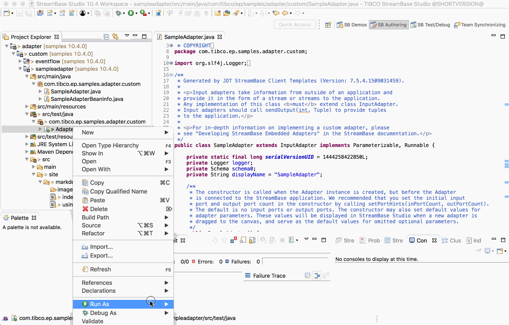

Adapter : Sample Adapter
This sample describes how to build a custom adapter.
- Maven pom.xml
- Sample adapter source
- Building this sample from TIBCO StreamBase Studio™ and running the unit test cases
- Building this sample from the command line and running the unit test cases
Maven pom.xml
The maven pom.xml should be of package type jar but use the ep-eventflow-fragment parent to bring in the right dependencies :
<?xml version="1.0" encoding="UTF-8"?>
<project xmlns="http://maven.apache.org/POM/4.0.0" xmlns:xsi="http://www.w3.org/2001/XMLSchema-instance" xsi:schemaLocation="http://maven.apache.org/POM/4.0.0 http://maven.apache.org/xsd/maven-4.0.0.xsd">
<!-- vim: set tabstop=4 softtabstop=0 expandtab shiftwidth=4 smarttab : -->
<modelVersion>4.0.0</modelVersion>
<groupId>com.tibco.ep.samples.adapter.custom</groupId>
<artifactId>sampleadapter</artifactId>
<packaging>jar</packaging>
<version>1.0.0</version>
<name>Adapter : Custom - Sample Adapter</name>
<description>How to build and unit test a custom adapter.</description>
<!-- common definitions for this version of StreamBase -->
<parent>
<groupId>com.tibco.ep.sb.parent</groupId>
<artifactId>ep-eventflow-fragment</artifactId>
<version>10.4.0-SNAPSHOT</version>
<relativePath/>
</parent>
</project>
Sample adapter source
For the sample adapter source, see SampleAdapter.java and SampleAdapterBeanInfo.java.
For the unit test cases, see AdapterTest.java.
Documentation on how to write adapters can be found in Creating Custom Java Embedded Adapters.
Building this sample from TIBCO StreamBase Studio™ and running the unit test cases
Use the Run As -> Java Fragment Unit Test menu option to build from TIBCO StreamBase Studio™ :

Building this sample from the command line and running the unit test cases
Use the maven as mvn install to build from the command line or Continuous Integration system :